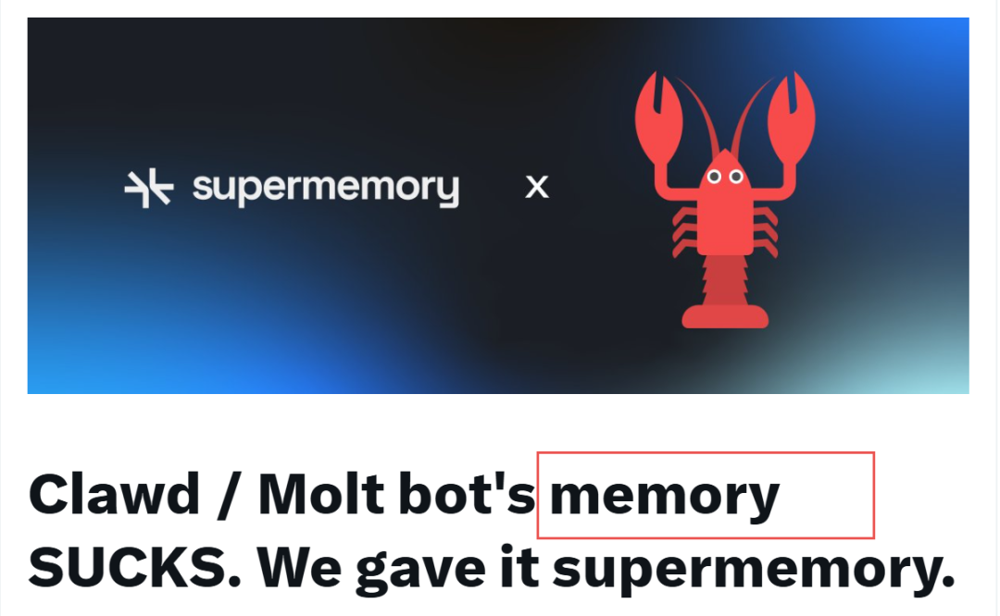
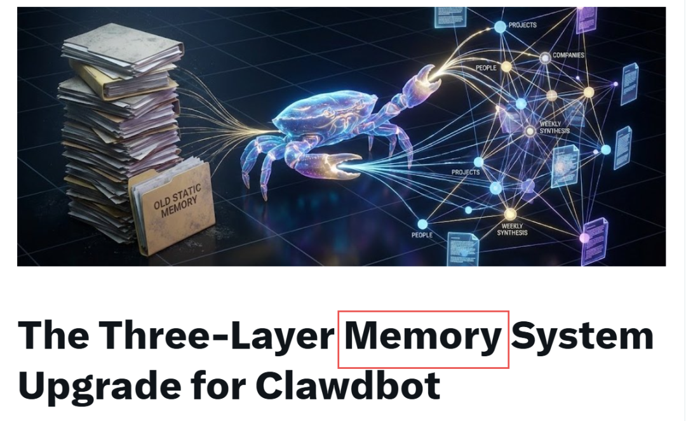

Clawdbot项目已经突破100k，火得一塌糊涂，以至于火到被迫改名了moltbot

大多数 AI 助手默认都会遗忘。Clawdbot 不会——但开箱即用，但它的记忆仍然是静态的。
他们将 Clawdbot 的记忆升级为超级/动态记忆，随你的生活变化自动演化。多模态大模型文档智能最佳实践
| Moltbot超级记忆 | Clawdbot三层记忆 |
|---|---|
 |  |
1. Clawdbot三层记忆
Clawdbot 记忆的工作原理（开箱即用）
Clawdbot 已经内置了扎实的基础模块：
AGENTS.md — 行为规则和运行原则 MEMORY.md — 持久的用户偏好 Heartbeats — 周期性唤醒 Cron jobs — 定时自动化
这些足以实现基本的连续性。你的 Clawdbot 能记住偏好、遵循规则、主动行动。
但存在一个结构性缺陷。 所有这些记忆都是静态的。 你必须手动维护。
生活不是这样运转的。
六个月前你写下"我的老板 Sarah 很难搞"。 后来你换了工作。 你喜欢新经理。 但你的 Clawdbot 还以为你讨厌老板。
这套系统解决这个问题。
这次升级带来了什么
三层记忆系统将记忆从平面文件转变为活的知识图谱：
自动事实提取每约 30 分钟，一个廉价的子代理扫描对话并保存持久性事实（每天几美分）。
基于实体的存储事实按人、公司或项目存储——不是扔进一个单一的大文件。
每周综合整理周日定时任务根据原始事实重写摘要，自动清理过时上下文。
替代而非删除事实变化时，旧的被标记为历史。完整历史得以保留。
结果：你的 Clawdbot 的理解力自我更新。上下文保持最新，无需手动编辑。
三层架构
Layer 1: 知识图谱 (/life/areas/)
└── 带原子事实 + 动态摘要的实体
Layer 2: 每日笔记 (memory/YYYY-MM-DD.md)
└── 原始事件日志——发生了什么，何时发生
Layer 3: 隐性知识 (MEMORY.md)
└── 模式、偏好、经验教训
这不仅仅是记忆。 这是复利智能。
每次对话增加信号。 每周，信号被提炼。 六个月后，你的 Clawdbot 理解你的生活——结构化、可搜索、且实时更新。
第一层：知识图谱
这是魔法发生的地方。 你生活中每个有意义的实体都有一个文件夹：
/life/areas/
├── people/
│ ├── sarah/ # 前老板（升级前的反派角色）
│ │ ├── summary.md
│ │ └── items.json
│ ├── maria/ # 商业伙伴
│ ├── emma/ # 家人
│ └── sarah-connor/ # 知道太多。谨慎信任。
├── companies/
│ ├── acme-corp/ # 旧工作
│ ├── newco/ # 当前工作
│ └── skynet/ # 别给 cron 权限
原子事实（items.json）
每个事实都存储为离散的、带时间戳的单元：
{
"id": "sarah-003",
"fact": "难搞的管理者， micromanages",
"timestamp": "2025-06-15",
"status": "active"
}
当现实变化，事实是被替代而非抹除：
{
"id": "sarah-003",
"status": "superseded",
"supersededBy": "sarah-007"
},
{
"id": "sarah-007",
"fact": "不再共事——离开了 Acme Corp",
"timestamp": "2026-01-15",
"status": "active"
}
没有丢失。你的 Clawdbot 可以追溯关系如何随时间演变。
动态摘要（summary.md）
你的 Clawdbot 从不把数百条原始事实加载到上下文中。 相反，每个实体都有一个每周重写的快照：
# Sarah
Acme Corp 前经理（2024–2025）。
换工作后不再相关。
旧信息自然淡出。
上下文保持精简准确。
第二层：每日笔记
memory/2026-01-27.md —— 原始时间线。
# 2026-01-27
- 10:30am: 购物
- 2:00pm: 医生复查
- 决策：日历事件现在使用 emoji 分类
这是"何时"层。 Clawdbot 持续写入这些。 持久事实随后被提取到第一层。
第三层：隐性知识
MEMORY.md 捕捉你的运作方式。
## 我的工作方式
- 冲刺型工作者——高强度爆发，然后休息
- 联系偏好：电话 > 短信 > 邮件
- 早起者，喜欢简短信息
## 经验教训
- 别为一次性提醒创建 cron 任务
这些不是关于世界的事实。 它们是关于你的事实。 （文件已存在——这次升级只是正式化它的角色。）
复利引擎
这是普通 Clawdbot 被甩在身后的地方。
实时提取（每约 30 分钟）
一个廉价子代理（如 Haiku，~$0.001）扫描近期对话提取持久事实：
"Maria 的公司招了两个开发者" "Emma 迈出了第一步" "开始新工作，向 James 汇报"
主模型保持空闲，除非你正在聊天。 成本：每天几美分。
每周综合整理（周日）
每周，Clawdbot：
审阅新增事实 更新相关摘要 将矛盾事实标记为历史 生成干净、当前的快照
无需手动编辑。 没有过时假设。
飞轮效应
对话
↓
事实提取（廉价）
↓
知识图谱增长
↓
每周综合整理
↓
下次聊天更好的上下文
↓
更好的回复
↓
更多对话
这会产生复利。
第 1 周：基本偏好 第 1 个月：日常习惯、关键人物 第 6 个月：项目、里程碑、关系 第 1 年：比大多数人对你的生活更丰富的模型
全部人类可读。 全部可搜索。 永远实时更新。
为什么这胜过其他一切
| 三层 Clawdbot | 可读文件。自动维护。复利智能。 |
实施指南
1. 创建文件夹结构
mkdir -p ~/life/areas/people
mkdir -p ~/life/areas/companies
mkdir -p ~/clawd/memory
2. 添加到 AGENTS.md
## 记忆 —— 三层
### Layer 1: 知识图谱 (`/life/areas/`)
- `people/` — 人物实体
- `companies/` — 公司实体
分层检索：
1. summary.md — 快速上下文
2. items.json — 原子事实
规则：
- 立即保存事实到 items.json
- 每周：从活跃事实重写 summary.md
- 永不删除——用替代代替
3. 添加到 HEARTBEAT.md
## 事实提取
每次心跳：
1. 检查新对话
2. 生成廉价子代理提取持久事实
3. 写入相关实体 items.json
4. 记录 lastExtractedTimestamp
重点：关系、状态变化、里程碑
跳过：闲聊、临时信息
4. 每周综合整理 cron（周日）
## 每周记忆审阅
对每个有新事实的实体：
1. 加载 summary.md
2. 加载活跃 items.json
3. 为当前状态重写 summary.md
4. 将矛盾事实标记为替代
5. 原子事实 schema
{
"id": "entity-001",
"fact": "实际事实",
"category": "relationship|milestone|status|preference",
"timestamp": "YYYY-MM-DD",
"source": "conversation",
"status": "active|superseded",
"supersededBy": "entity-002"
}
Supermemory
Clawdbot严重依赖工具来引用记忆。
工具的问题在于——模型并没有被训练成每次都使用它们。
记忆应该是模型随时能访问的东西，每次运行都应该直接喂给模型。然而，Molt 当前的架构因为记忆功能太差，完全行不通。
解决方案。
把 Clawd bot 和 Supermemory 集成了，具备：
全天候自动回忆 手动搜索、遗忘、获取资料等工具 /remember和/recall命令
要为你的 Clawd bot 安装 Supermemory，去这里：
https://supermemory.ai/docs/integrations/clawdbot
推荐阅读
每天一篇大模型Paper来锻炼我们的思维~已经读到这了，不妨点个👍、❤️、↗️三连，加个星标⭐，不迷路哦~